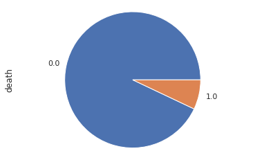
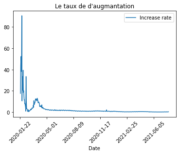
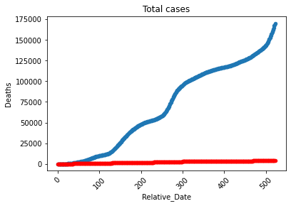
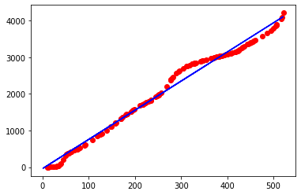
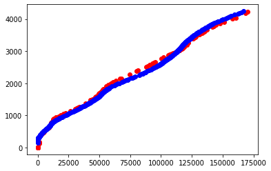

Work done by Mehdi CHEBBAH.
Table of Contents
Table of ContentsWorking environmentAnacondaSpyderScikit-learnMatplotlibStudyStatistical studyBasic studyThe tendency of the evolution of the pandemicThe evolution in AlgeriaIn-depth studyLinear regressionModel for predicting the number of deathsTime-only basedBased on the number of confirmed casesBased on time and number of confirmed casesConclusionBibliography & Webography
Working environment
Anaconda
Anaconda is a utility for Python offering many features. It offers for example the possibility to install libraries and to use them in its programs, but also offers software to help developers to set up a complete development environment quickly.
Spyder
Spyder (named Pydee in its first versions) is a development environment for Python. Free (MIT license) and multi-platform, it integrates many libraries for scientific use Matplotlib, NumPy, SciPy and IPython.
Scikit-learn
Scikit-learn is a free Python library for machine learning. It is developed by many contributors, especially in the academic world by French higher education and research institutes like Inria and Télécom Paris. It includes functions for estimating random forests, logistic regressions, classification algorithms, and support vector machines. It is designed to harmonize with other free Python libraries, notably NumPy and SciPy.
Matplotlib
Matplotlib is a library of the Python programming language for plotting and visualizing data in graphical form. It can be combined with the NumPy and SciPy6 scientific computing python libraries. Matplotlib is distributed free and free under a BSD style license. Its current stable version (the 2.0.1 in 2017) is compatible with Python version 3.
Study
Statistical study
We are going to use these libraries which will facilitate our task
1import pandas as pd2import matplotlib.pyplot as pltBasic study
In this section we will use the data set detailed-cases.csv which contains data on more than 800 cases collected between 13/01/2020 and 09/02/2020 in China, Hong Kong, Japan, Singapore, South Korea and other countries.
xxxxxxxxxx11df = pd.read_csv('./datasets/detailed-cases.csv')we first want to estimate the age of the people likely to get sick with this pandemic. To do this
xxxxxxxxxx11boxplot = df.boxplot(column=['age'])
It can be seen that more than 50% of the infected are between 35 and 65 years old and that the average age is 53.
We now want to study the effect of gender on the distribution of cases
- in relation to the number of infections
xxxxxxxxxx31fig, ax = plt.subplots()2ax.boxplot([df.query('gender == "male"')['age'], df.query('gender == "female"')['age']])3ax.set_xticklabels(['male', 'female'])
Therefore, the distribution of the infected between the two sexes in relation to age is practically equal.
- in relation to the number of deaths
xxxxxxxxxx31fig, ax = plt.subplots()2ax.boxplot([df.query('gender == "male" and death == "1"')['age'], df.query('gender == "female" and death == "1"')['age']])3ax.set_xticklabels(['male', 'female'])
Thus, in relation to the number of deaths, more than 50% of male deaths are between 60 and 80. However, 50% of female deaths are between 67 and 82.
- The percentage of deaths
xxxxxxxxxx31df.death.groupby(df.death).count().plot(kind='pie')2plt.axis('equal')3plt.show()
We notice that the percentage of deaths is lower than 10%.
- Now we want to study the symptoms, and to do so we can use the word clouds.
x1from wordcloud import WordCloud23separateur = ' '4df = df.fillna(value={'symptom': ''})5text = separateur.join(df['symptom'])6text = text.replace(",", "").strip()78word_cloud = WordCloud().generate(text)910image = word_cloud.to_image()11image.show()
So the symptoms that appear on most COVID-19 infected people are: Fever, Dry cough, Dyspnea, Fatigue, Diarrhea, Sickness, Irritated throat.
The tendency of the evolution of the pandemic
For this part we will use the data set that exists in this repo-Github that contains the data of the global cumulative evolution of COVID-19 (world-aggregated.csv), the cumulative evolution in each country (countries-aggregated. csv), a comparison between the countries most affected by this pandemic (key-countries-pivoted.csv) and details about the United States (us_confirmed.csv and us_deaths.csv) - we will not study the case of the United States -.
- The evolution of the number of cases globally
We will use the data set worldwide-aggregated.csv.
xxxxxxxxxx11df = pd.read_csv('./datasets/worldwide-aggregate.csv')for the evolution of the number of suspected cases, deaths and recovered cases
xxxxxxxxxx101ax = plt.gca()23df.plot(kind='line',x='Date',y='Confirmed',ax=ax)4df.plot(kind='line',x='Date',y='Recovered', color='red', ax=ax)5df.plot(kind='line',x='Date',y='Deaths', color='green', ax=ax)67plt.title('Total cases')8plt.xticks(rotation=45)910plt.show()
- The rate of increase in the number of cases each day
xxxxxxxxxx81ax = plt.gca()23df.plot(kind='line',x='Date',y='Increase rate',ax=ax)45plt.title("Le taux de d'augmantation")6plt.xticks(rotation=45)78plt.show()
- We now want to compare the evolution of the pandemic in the first 8 countries in the number of cases
xxxxxxxxxx111df = pd.read_csv('./datasets/key-countries-pivoted.csv')23fig, ax_lst = plt.subplots(4, 2, sharex='col', sharey='row')45for i in range(1, 9):6 ax = ax_lst.ravel()[i-1]7 ax.xaxis.get_major_locator().set_params(nbins=3)8 ax.yaxis.get_major_locator().set_params(nbins=2)9 df.plot(kind='line',x='Date',y=df.columns[i],ax=ax)1011fig.tight_layout(pad=0, h_pad=.1, w_pad=.1)
- A comparison between the 5 continents
xxxxxxxxxx161continents = ['Africa', 'South America', 'Europe', 'North America', 'Asia']2df = pd.read_csv('./datasets/continents-cases-deaths.csv')34fig, ax_lst = plt.subplots(3,2 , figsize=(8, 7), sharex='col', sharey='row')5fig.delaxes(ax_lst[2,1])67for i in range(5):8 ax = ax_lst.ravel()[i]9 ax.xaxis.get_major_locator().set_params(nbins=3)10 ax.yaxis.get_major_locator().set_params(nbins=2)11 ax.title.set_text(continents[i])12 df.query('Entity == "' + continents[i] + '"').plot(kind='line',x='Date',y='Total confirmed deaths (deaths)', color='red', ax=ax)13 df.query('Entity == "' + continents[i] + '"').plot(kind='line',x='Date',y='Total confirmed cases (cases)', color='blue', ax=ax) 1415fig.tight_layout(pad=0, h_pad=.1, w_pad=.1)16fig.show()
The evolution in Algeria
- The evolution of the cumulative number of confirmed cases, deaths and recoveries
xxxxxxxxxx111df = pd.read_csv('./datasets/countries-aggregated.csv')2df['Date'] = pd.to_datetime(df['Date'])34ax = plt.gca()5df_algeria = df.query('Country == "Algeria"')6df_algeria.loc[df_algeria['Date'] > '2020-02-15'].plot(kind='line',x='Date',y='Confirmed',ax=ax)7df_algeria.loc[df_algeria['Date'] > '2020-02-15'].plot(kind='line',x='Date',y='Recovered', color='green', ax=ax)8df_algeria.loc[df_algeria['Date'] > '2020-02-15'].plot(kind='line',x='Date',y='Deaths', color='red', ax=ax)9plt.title('Total cases')10plt.xticks(rotation=45)11plt.show()
- The evolution of the number of confirmed cases, deaths and recoveries per day
xxxxxxxxxx111df = pd.read_csv('./datasets/COVID-19-geographic-disbtribution-worldwide.csv')2df['dateRep'] = pd.to_datetime(df['dateRep'], dayfirst=True)34ax = plt.gca()5df_algeria = df.query('countriesAndTerritories == "Algeria"')6df_algeria.loc[df_algeria['dateRep'] > '2020-02-15'].plot(kind='line',x='dateRep',y='cases',ax=ax)7df_algeria.loc[df_algeria['dateRep'] > '2020-02-15'].plot(kind='line',x='dateRep',y='deaths', color='red', ax=ax)8plt.title('Daily cases')9ax.set_xlabel("Date")10plt.xticks(rotation=45)11plt.show()
- Comparison to some third world countries
xxxxxxxxxx131df = pd.read_csv('./datasets/countries-aggregated.csv')2df['Date'] = pd.to_datetime(df['Date'])3df = df.loc[df['Date'] > '2020-03-09']45ax = plt.gca()6df.query('Country == "Algeria"').plot(kind='line',label='Algeria', x='Date',y='Confirmed',ax=ax, marker='', color='red', linewidth=4, alpha=0.9)7df.query('Country == "Egypt"').plot(kind='line',label='Egypt',x='Date',y='Confirmed', ax=ax, marker='', color='orange', linewidth=2, alpha=0.5)8df.query('Country == "Morocco"').plot(kind='line',label='Morocco',x='Date',y='Confirmed', ax=ax, marker='', color='green', linewidth=2, alpha=0.5)9df.query('Country == "Tunisia"').plot(kind='line',label='Tunisia',x='Date',y='Confirmed', ax=ax, marker='', color='gray', linewidth=2, alpha=0.5)10df.query('Country == "Saudi Arabia"').plot(kind='line',label='Saudi Arabia',x='Date',y='Confirmed', ax=ax, marker='', color='blue', linewidth=2, alpha=0.5)11plt.title('Total cases')12plt.xticks(rotation=45)13plt.show()
In-depth study
We will be using these libraries to make our task easier
xxxxxxxxxx31import numpy as np2import matplotlib.pyplot as plt3import pandas as pdLinear regression
We want to do a linear regression to try to predict the number of suspected cases and the number of deaths as a function of time. To do this we need to go through a preprocessing of the data.
Note that it's impossible to predict the number of cases depending only on time (There are a tons of parameters that controles the spreading of the pandemic). But just for the sake of the tutorial we will do this. Because our goal is to learn how to apply a simple Machine Learning algorithm to our dataset.
xxxxxxxxxx61dataset = pd.read_csv('./datasets/countries-aggregate.csv')23dataset['Date'] = pd.to_datetime(dataset['Date'])4dataset = dataset.query('Country == "Algeria"')5dataset = dataset.loc[dataset['Date'] > '2020-02-24']6dataset['Relative_Date'] = (dataset['Date'] - pd.to_datetime('2020-02-24')).dt.total_seconds() / (60 * 60 * 24)It can be seen from the graphical representations of these two variables that a simple linear regression cannot be a good prediction model.
xxxxxxxxxx61ax = plt.gca()2dataset.plot(kind='scatter',x='Relative_Date',y='Confirmed',ax=ax)3dataset.plot(kind='scatter',x='Relative_Date',y='Deaths', color='red', ax=ax)4plt.title('Total cases')5plt.xticks(rotation=45)6plt.show()
Model for predicting the number of deaths
We would like to do a regression based on the number of cases and time, as we can do with the number of confirmed cases only, and we can also do a regression of the number of deaths against time and compare the results
Time-only based
xxxxxxxxxx31ax = plt.gca()2dataset.plot(kind='scatter',x='Relative_Date',y='Deaths',ax=ax)3plt.show()
xxxxxxxxxx151X = dataset.iloc[:, 5:6].values2y = dataset.iloc[:, 4].values34from sklearn.model_selection import train_test_split5X_train, X_test, y_train, y_test = train_test_split(X, y, test_size = 1/4)67from sklearn.linear_model import LinearRegression8regressor = LinearRegression()9regressor.fit(X_train, y_train)1011y_pred = regressor.predict(X_test)1213plt.scatter(X_test, (y_test), color = 'red')14plt.plot(X_train, (regressor.predict(X_train)), color = 'blue')15plt.show()
For the R2 value
xxxxxxxxxx31from sklearn.metrics import r2_score2r2_score(y_test, y_pred)3# 0.9878530462384223Based on the number of confirmed cases
xxxxxxxxxx31ax = plt.gca()2dataset.plot(kind='scatter',x='Confirmed',y='Deaths',ax=ax, color='red')3plt.show()
xxxxxxxxxx151X = dataset.iloc[:, 2:3].values2y = dataset.iloc[:, 4].values34from sklearn.model_selection import train_test_split5X_train, X_test, y_train, y_test = train_test_split(X, y, test_size = 1/4)67from sklearn.linear_model import LinearRegression8regressor = LinearRegression()9regressor.fit(X_train, y_train)1011y_pred = regressor.predict(X_test)1213plt.scatter(X_test, (y_test), color = 'red')14plt.plot(X_train, (regressor.predict(X_train)), color = 'blue')15plt.show()
For the R2 value
xxxxxxxxxx31from sklearn.metrics import r2_score2r2_score(y_test, y_pred)3# 0.9869034769131676Based on time and number of confirmed cases
xxxxxxxxxx151X = dataset.iloc[:, [2,5]].values2y = dataset.iloc[:, 4].values34from sklearn.model_selection import train_test_split5X_train, X_test, y_train, y_test = train_test_split(X, y, test_size = 1/4)67from sklearn.linear_model import LinearRegression8regressor = LinearRegression()9regressor.fit(X_train, y_train)1011y_pred = regressor.predict(X_test)1213plt.scatter(X_test[:,0], (y_test), color = 'red')14plt.scatter(X_train[:,0], (regressor.predict(X_train)), color = 'blue')15plt.show()
For the R2 value
xxxxxxxxxx31from sklearn.metrics import r2_score2r2_score(y_test, y_pred)3# 0.9920208643902232We notice that the third model is the best with respect to the value of R2
Conclusion
The regression model is incapable of predicting correct results in the future. Indeed, the evolution of the pandemic does not depend on time only, but there are other factors that help or brake its propagation, for example the degree of quarantine application, the percentage of confirmed cases in relation to the total population, the density of infected wilayas and other factors.
However, in order to design a good quality model, a large amount of good quality data is needed. In addition, it is necessary to choose another model because I think that the evolution of this pandemic is not linear and cannot be modeled by a linear model.
We can do the modeling by a SVR algorithm (Support Vector Regression) or a polynomial regression or by using decision trees hoping that the results will be better adapted to the context of this pandemic.
Bibliography & Webography
- https://fr.wikipedia.org/wiki/Anaconda_(Python_distribution) (fr)
- https://fr.wikipedia.org/wiki/Spyder_(logiciel) (fr)
- https://fr.wikipedia.org/wiki/Scikit-learn (fr)
- https://fr.wikipedia.org/wiki/Matplotlib (fr)
- Le nombre de nouvelles cas par jour (en)
- Le nombre de cas cumulee (en)
- La liste détaillés des individues infectées (en)